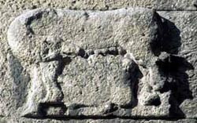

Un dahu des Cévennes a-t-il existé ? Et celui de l'Espiguette ?

Fiche du débat
- Hypothèse retenue
- Origine savoyarde
- Indice linguistique
- « Dahu », patois savoyard
- Piste cévenole
- Bas-reliefs, non confirmée
- Cas Espiguette
- Confusion d'espèce probable
Cette page est réservée aux scientifiques, car le débat est extrêmement compliqué : ce que je vous ai dit est la version la plus probable sur l'origine du dahu de Camargue. Mais certains prétendent qu'il y a des dahus depuis plus de mille ans en Camargue, et qu'ils viendraient non pas de Savoie, mais des Cévennes. Je ne crois pas cette version, quoique quelques bas-reliefs sur la Maison Carrée de Nîmes aient été interprétés comme une représentation de dahus.
À mon avis, si c'était le cas, ils porteraient un autre nom, car il n'y a aucune racine latine dans le mot « dahu », ni grecque, d'ailleurs. « Dahu » me semble plutôt provenir du patois savoyard, ce qui accrédite la thèse savoyarde que je défends. Mais je suis preneur de toute nouvelle information sur le sujet si un linguiste veut bien y travailler.
De la même manière, certains disent avoir vu des dahus du côté de la plage de l'Espiguette, c'est-à-dire à 80 km de la zone que je décris. Mais ils les décrivent comme à poil très ras : tout indique qu'ils les ont confondus avec une autre espèce, d'autant qu'ils disent les avoir vus copuler dans les dunes, ce qui est impossible pour un animal aussi farouche, qui de plus se déplace très rarement sur le sable (c'est pourquoi les traces que je montre sur la page d'accueil de ce site sont exceptionnelles).
Le débat scientifique reste ouvert, espérons qu'un gouvernement saura trouver les fonds pour financer ces recherches...